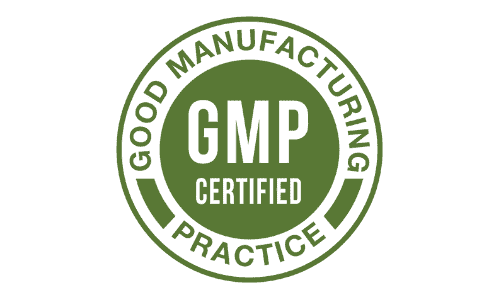
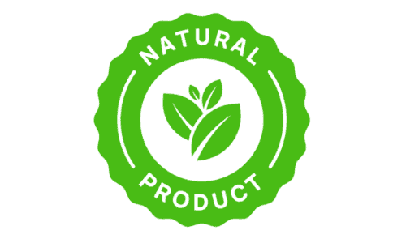

Why Maxorin
Why People Choose Maxorin
Made In The USA
Produced in the United States under standard manufacturing practices.
FDA-Registered Facility
Maxorin is produced in an FDA-registered facility.

GMP Manufacturing
Manufactured under Good Manufacturing Practice guidelines for consistent quality.

100% Natural Formula
Made with natural, plant-based ingredients — no unnecessary fillers.